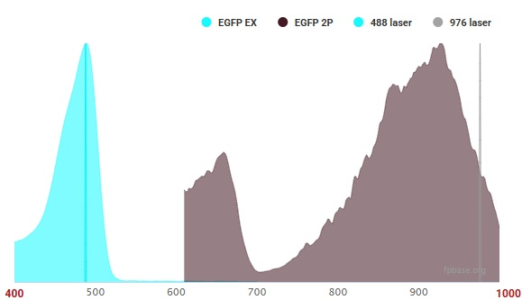

Two-Photon Microscopy
The most common thing I hear is the way you find the optimal excitation wavelength for two-photon microscopy is you take the normal excitation, and double it. If you are doing that, your microsocpy is deeply suboptimal. I’m not going to show a diagram of that concept here, because I don’t want to perpetuate it. Instead let me show you a spectra.
Here is the spectra for eGFP; normal excitation is 488 nm, but double that to 976 nm and you get about half the efficiency of the real peak at 926 nm.

If it were simply doubling the wavelength, those spectra would look very different.
And then consider the Alexa fluorophores: Alexa 488, Alexa 568, Alexa 594, Alexa 647. You’d expect optimal two-photon excitation wavelengths of 976, 1136, 1188, and 1294 nm, respectively. Instead, you’ll find peak excitations around 800 nm. In fact, you can excite almost every single Alexa fluorophore at 800 nm through two-photon excitation. Someone should really write a paper about that and make a modern database of two-photon excitation spectra while you are at it!
So, the optimal two-photon excitation is not double normal excitation.
How two-photon excitation works
A photon needs enough energy to excite a molecule.
A molecule might have two states, a ground state \(S_0\), and an excited state \(S_1\). A photon can excite the molecule to the \(S_1\) state if it has enough energy.
A photon’s energy is: \[E = \frac{hc}{\lambda}\]
Where \(h\) is Planck’s constant, \(c\) is the speed of light, and \(\lambda\) is the wavelength. The shorter the wavelength, the higher the energy.
If the photon does not have enough energy, it does not matter how many photons the molecule interacts with; it will not excite. If a small wave does not have enough energy to knock over a sailboat, that sailboat can withstand an infinite number of those small waves. There is an exception:
The energy-time uncertainty principle
There exists a timescale in which the universe does not resolve energy transitions. \[ \Delta E \Delta t \ge \frac{\hbar}{2} \] Where \(\hbar=h/2\pi\). \(\Delta t\) is the timescale, and \(\Delta E\) is the relevant energy. In the case of two-photon, the relevant energy is similar to the mismatch between the photon energy and the energy needed to excite the molecule.
If you have an 800 nm photon, it has an energy of approximately \(2.5 \times 10^{-19} J\). If you need an energy of approximately \(5 \times 10^{-19} J\), then: \[ \Delta t \approx \frac{\hbar}{2 \Delta E}\] \[ \approx \frac{10^{-34} \text{ J} \cdot \text{s}}{2 \times 2.5 \times 10^{-19} \text{ J}} \] \[ \approx 2 \times 10^{-16} \text{ s}, \] roughly a femtosecond.
If we can introduce two photons to the molecule in a timescale smaller than \(\Delta t\), roughly a femtosecond, we can start to consider second-order interactions between the molecule and multiple “simultaneous” photons. Note the bigger the energy gap \(\Delta E\) between the photon and the actual excitation that you need, the smaller the timescale \(\Delta t\).
To do this experimentally, we build really high-power lasers. We pulse these high-power lasers to send out all the photons in as short a chirp as we can, to increase the probability that we get one of these interactions. Also, note that you don’t need to use two photons of the same energy. If you have the luxury of having multiple two-photon lasers, it is possible to get some very good excitations from two different wavelengths coming in at the same pulse.
Symmetry Selection Rules A single photon exciting a molecule transitions the symmetry of the state, while two photons exciting a molecule do not change the symmetry of the state. So the one-photon excited state, \(S_1\), is a different (lower) state than the two-photon excited state \(S_1^+\).
2-Photon accesses a different excited state
The two-photon process does not access the same electronic state as the one-photon process. Consider exciting Alexa-647 with 800 nm instead of the prescribed 1294 nm.The shorter wavelength, 800 nm, means each photon carries more energy. The two-photon process for Alexa 647 is accessing an excited state, \(S_1^+\), that is higher in energy than the \(S_1\) state. I think that the fact that many Alexa fluorophores can be efficiently excited around 800 nm is because these dyes, despite their varying \(S_0 \rightarrow S_1\) energy gaps, have a common higher-lying electronic state that is strongly accessible with the combined energy of two 800 nm photons. The Alexa dyes are based on related rhodamine or cyanine core structures, with slight modifications to create their normal spectra, but the core structures probably possess similar higher-energy manifolds of electronic states. The presence of multiple two-photon excitation peaks for Alexa 647 at both 800 nm and 1200 nm indicates that there are at least two different electronic states that can be efficiently accessed. The 1200 nm peak is closer to the doubled wavelength, suggesting it might access a state energetically nearer to the one-photon state, while the 800 nm peak accesses a higher energy state.
After two-photon excitation, the higher state \(S_+\) falls back to the one-photon excited state \(S_1\), which then falls back to the ground state \(S_0\). That final transition gives you the normal emission that you expect from a fluorophore. There is often a small but systematic red-shift of that final emission. Understanding where that red-shift comes from is left as an exercise to the reader.
Vibrational States
Each electronic state (\(S_0\), \(S_1\)) has many closely spaced vibrational energy levels. A molecule in the \(S_N\) electronic state can be in vibrational levels \(v\).
When a photon is absorbed, the molecule transitions from \(S_0, v=0\) to \(S_1, v\) . The energy of the absorbed photon matches the energy difference between the initial vibronic state (electronic + vibrational) and the final vibronic state. Because there are many possible vibrational levels \(v\) in \(S_1\) that the molecule can transition to, there’s a range of photon wavelengths that can cause excitation, this results in the absorption spectrum rather than just a few precise wavelengths that work. .
My 2-Photon Excitations
Here are the wavelengths I find work best for various fluorophores.
| Fluorophore | Peak Excitation (nm) |
|---|---|
| ATPRed1 | 1100 |
| Alexa 350 | 700 |
| Alexa 405+ | 800-900 |
| Alexa 430 | 715 |
| Alexa 488 | 800-1000 |
| Alexa 555, 555+ | 1000-1050 |
| Alexa 568 | 800 |
| Alexa 594 | 800-850 |
| Alexa 647, 647+ | 800, 1200 |
| Alexa 680 | 1280 |
| Alexa 700 | 800 |
| Alexa 750 | 800 |
| Alexa 790 | 800 |
| Brilliant Violet 421 | 450 |
| CF 488 | 800-950 |
| CF 568 | 800, 1150 |
| CF 750 | 800-850 |
| Dendra2 (both GFP, RFP) | 920 |
| Lipidspot488 | 910 |
| MitoView 633 | 850, 1125 |
| Pkmito DeepRed | 800 |
| Spy505 | 800 |
| Spy555 | 860 |
Some open questions.
How do you explain this in a way that offers predictive power?
I’ve been thinking about this for years. I used to offer two explanations of two-photon, one classical, one quantum. But the right way to explain this is from quantum field theory. The question is, how can you present a quantum field theory explanation of the two-photon excitation of a molecule that provides a microscopist with any experimental intuition at all?
Where are the models of spectra?
There is very little experimental excitation spectra of 2P (despite the great efforts of some scientists!). There just isn’t any reward for that kind of work, and the people who build the fluorophores don’t quantify them via 2P before selling them. It does seem however for small molecules like the Janellia Fluorophores and the Alexa Fluorophores that one can model the excitation spectra using some quantum chemistry simulations. Where is it? Some enterprising physics student should do this and contact me.
A suite of fluorophores that excel at exciting at the same or different wavelength?
It would be very nice to have a single laser, and get a ton of emission that you simply seperate by wavelength. This sort of happens by accident for many small molecule fluorophores, but can you do it on purpose? Can you do it on purpose with proteins as well? Can you intentionally not do it to help minimize imaging bleedthrough?